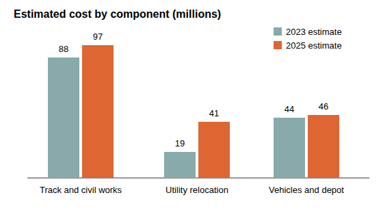
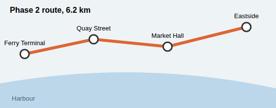

City council votes on tram extension
The council voted 9–4 on Tuesday to approve Phase 2 of the harbour tram, a 6.2 km extension that the transport authority says will be funded through a mix of a municipal bond issuance and a ring-fenced levy on commercial ratepayers within the Eastside catchment, subject to the capex ceiling set out in the 2024 framework agreement.1
What it will cost
Officials put the capital cost at 184 million, up from the 151 million estimated two years ago. The authority attributes most of the increase to utility relocation along Quay Street and says the figures in the table below include a 12 percent contingency.

| Component | 2023 estimate | 2025 estimate |
|---|---|---|
| Track and civil works | 88 | 97 |
| Utility relocation | 19 | 41 |
| Vehicles and depot | 44 | 46 |
Who pays the levy
Commercial properties within 800 metres of a new stop will pay the levy for fifteen years. Residential properties are exempt. Business owners on Quay Street said the charge arrives just as construction will cut foot traffic to their shops.

How the council voted
What happens next
Construction tenders open in March. Residents can comment on the stop locations until the end of January through the authority's consultation page, and the first section is due to open in late 2028.
1. The 2024 framework agreement caps the city's capital contribution at 200 million across both phases of the tram project.